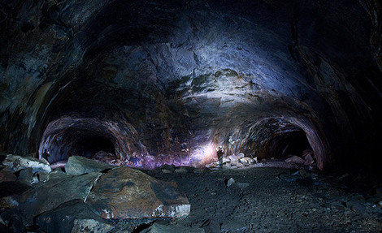
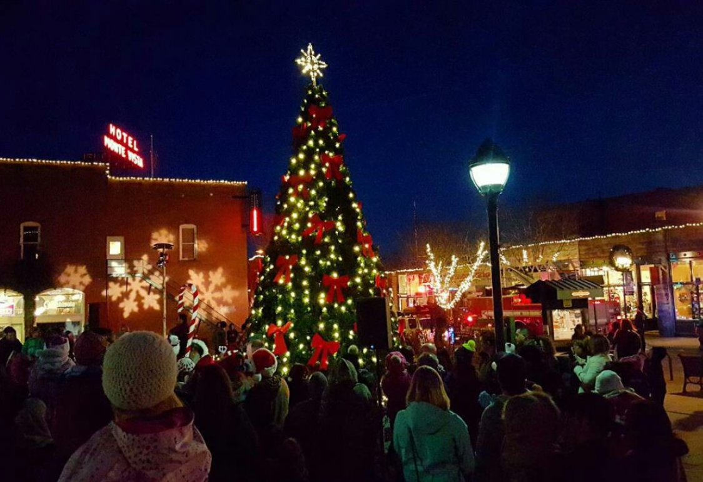

There are a bunch of activities you can do in Flasgstaff.
Lava Tubes are a great place to go, especially, during the winter or fall. When you go during the winter, in the lava tubes, it can be 38°F or less, and there are ice sicles on the sealings and walls.
Every year o December 1st, there is a Christmas Tree Lighting sarimony in the town square. It;s very beautiful. But, it is very cold becuase it is 36°F or less and is usually snowing during it.
« Previous